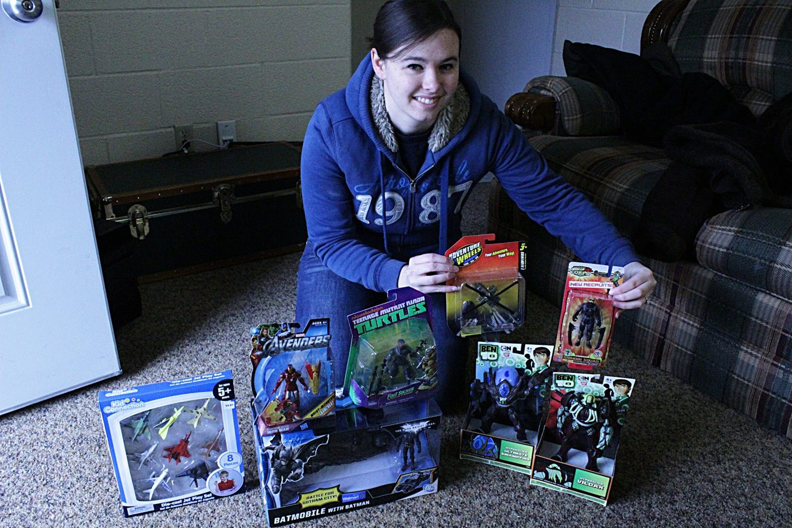
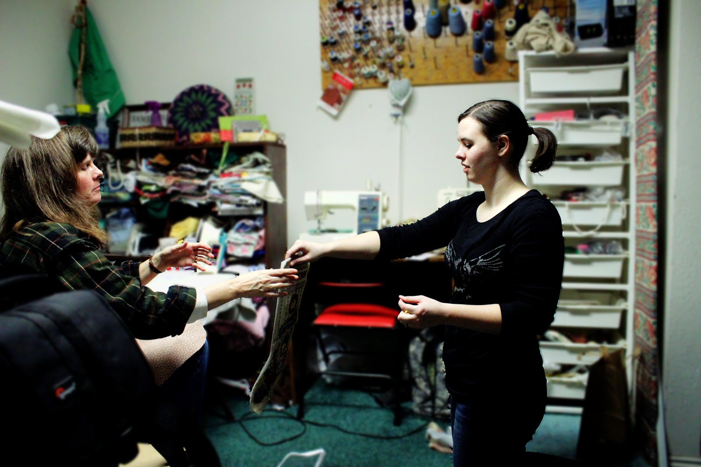
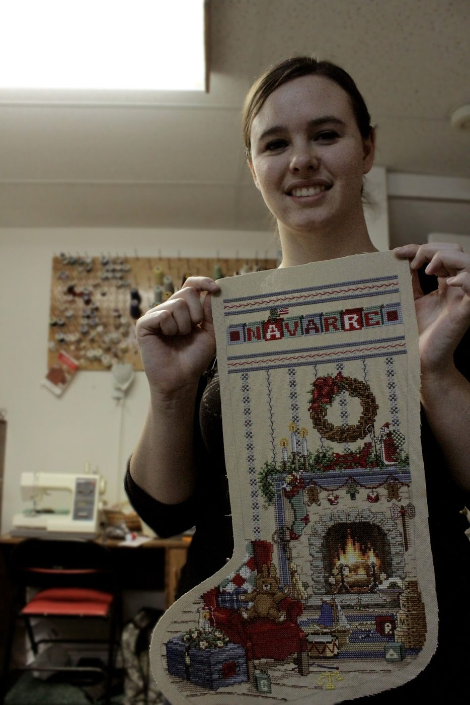
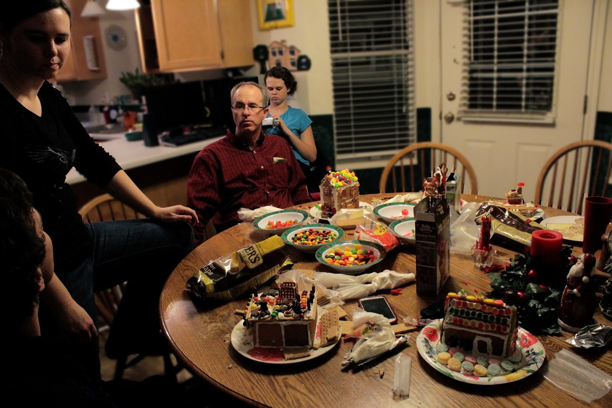
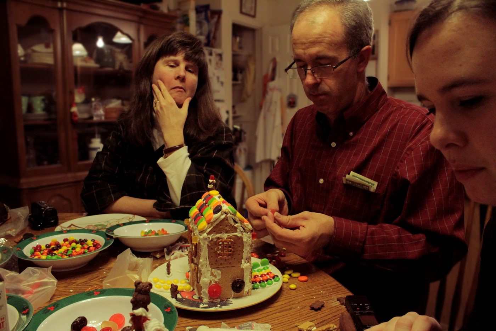

Stuff happened. Christmas stuff.
This year, we did Christmas a little different. Usually, we will agree to a set amount to buy presents for each other, but this year we changed that up. Catherine ran to the bank to deposit some checks, and while there she saw a Christmas Tree covered in paper stocking ornaments. It was an angel tree, and one of the Ornaments was for an 8 year old boy, who loved superheroes and whose favorite color was red! For whatever reason, she felt compelled to take the paper, so she grabbed it and brought it home. We decided that it would be super easy to buy the kid a couple of action figures, and wouldn't put a huge dent in our budget.
We went to do the shopping for the toys, and got completely caught up in it! While we were shopping around, we decided to do away with presents for ourselves, and instead went crazy and stocked this kid up good! We bought 6 action figures, two heroes and four villains, some vehicles and a plastic tote he could store it all in. We spent all of the money we had saved up for our combined Christmas gifts, and realized that this was one of the most satisfying things we have ever done! Our only regret is that we won't get to see his face light up when he opens the gifts! Merry Christmas little dude!
 |
| I was super jealous. But only for a minute, then I was super stoked for the kid! |
{kind=link}
Catherine has been diligently working on my Christmas stocking for over 4 years! Everyone in her family has one, cross stitched by her mom, and Catherine decided that I needed my own. We picked out the design and she got right to work!
| You Valdivieso people recognize that couch pattern? :) |
{kind=link}
 |
| Catherine getting advice from mom to complete the project! |
{kind=link}
 |
| Cross Stitching complete! |
{kind=link}
 |
| Gingerbread houses at the Miles' is serious business. |
{kind=link}
 |
| VERY serious business! |
{kind=link}
On Christmas day, we got to Skype with Michael from Germany! Grandma and Grandpa Johnson came over to talk to him as well. He is doing very well, is enjoying himself and seems to have grown up a lot! It was great fun talking to him, and we are excited for his success!
{kind=link}
Feliz Navidad a todos!
{kind=link}